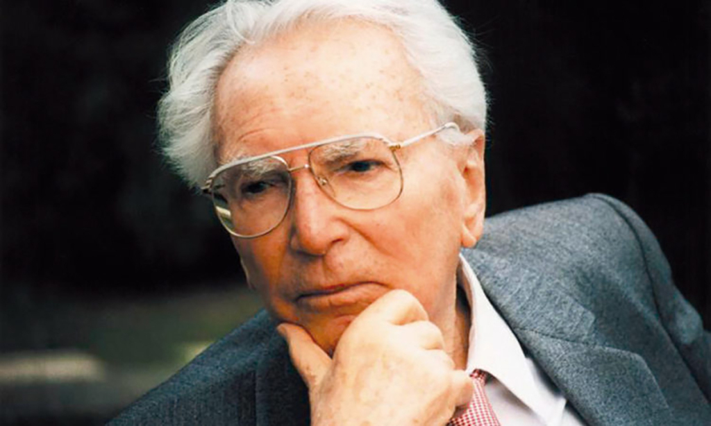

Man's Search for Meaning is a 1946 book by Viktor Frankl chronicling his experiences as a
prisoner in Nazi concentration camps during World War II, and describing his psychotherapeutic
method, which involved identifying a purpose in life to feel positive about, and then immersively
imagining that outcome.

Viktor Frankl. Psychiatrist.
Psychiatrist Viktor Frankl's memoir has riveted generations of readers with its descriptions
of life in Nazi death camps and its lessons for spiritual survival. Between 1942 and 1945
Frankl labored in four different camps, including Auschwitz, while his parents, brother, and
pregnant wife perished. Based on his own experience and the experiences of others he treated
later in his practice, Frankl argues that we cannot avoid suffering but we can choose how to
cope with it, find meaning in it, and move forward with renewed purpose. Frankl's theory-known
as logotherapy, from the Greek word logos ("meaning")-holds that our primary drive in life is
not pleasure, as Freud maintained, but the discovery and pursuit of what we personally find meaningful.